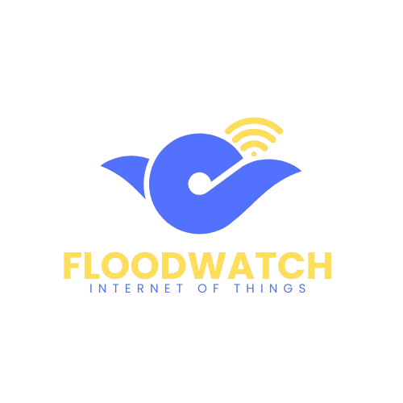

{% block extra_css %}{% endblock %}

Flood Watch
{% if session.username %}
Dashboard
Monitoring
Fuzzy Calculator
{% endif %}
{% if session.username %}
Welcome,
{{ session.username }}
Logout
{% endif %}
{% with messages = get_flashed_messages(with_categories=true) %} {% if messages %}
{% for category, message in messages %}
{{ message }}
{% endfor %}
{% endif %} {% endwith %}
{% block content %}{% endblock %}
System Online
{% block extra_js %}{% endblock %}